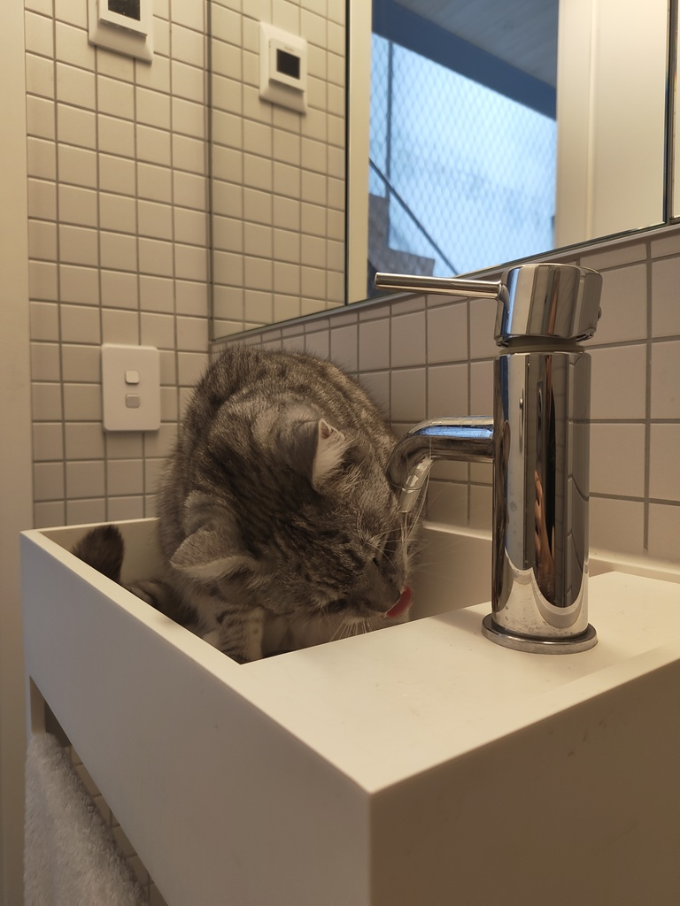
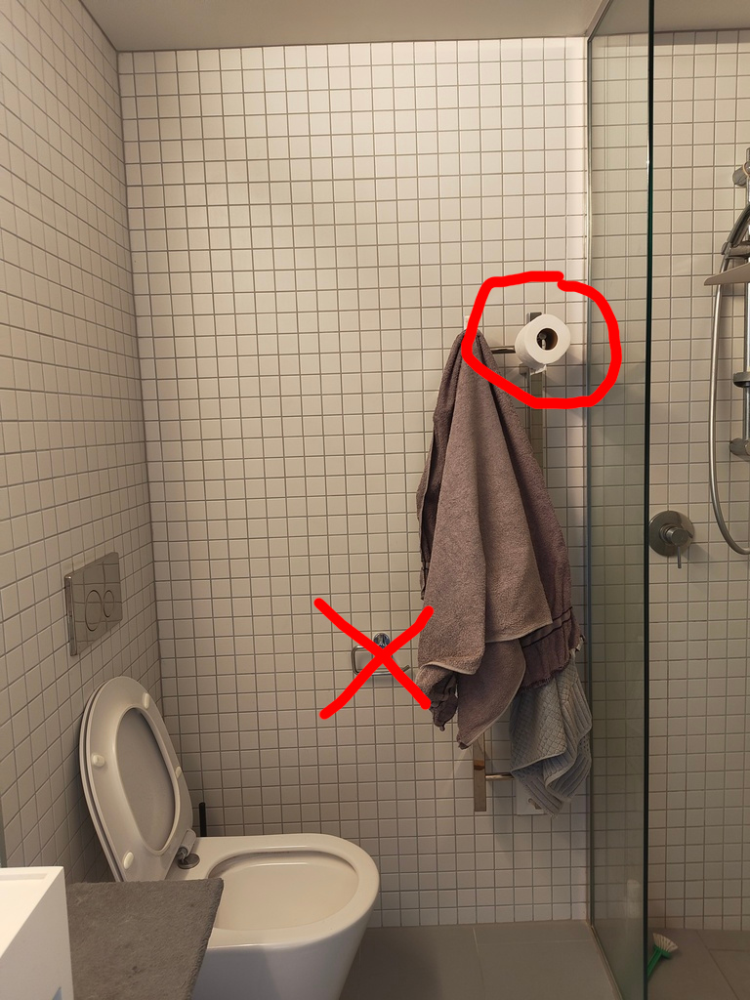

Thank you for taking care of Hermes while I'm away. Here are my travel dates:
- Leave: Thursday 26 November, early morning.
- Return: Sunday 29 November, around 11pm.
Contacts
Central Vet Hospital
8 Brooklyn Road
Wellington 6011
Ph 04 385 0303
After hours emergencies: Ph 04 473 7545
Also see list of contacts on fridge.
Things to do each day
1. Food in food bowl.
I've portioned out the food so each plastic box has one day's worth. I'll also leave a can of tuna in the fridge, you can give him some of that too.
2. Water in water bowls (x2).
One water bowl is on the ground floor next to his food, the other is in the middle floor bathroom.
3. Check litter boxes.
Generally need to be cleaned out daily. Poop goes in the toilet, wee clumps in the bag next to the litter box.
Other things

